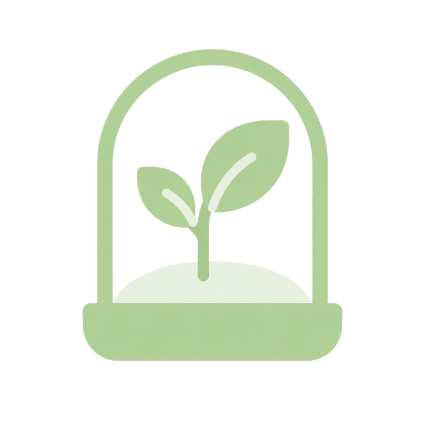
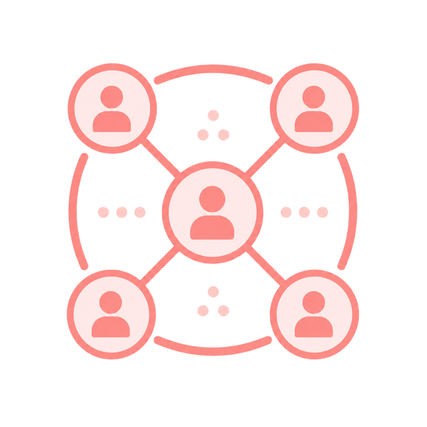
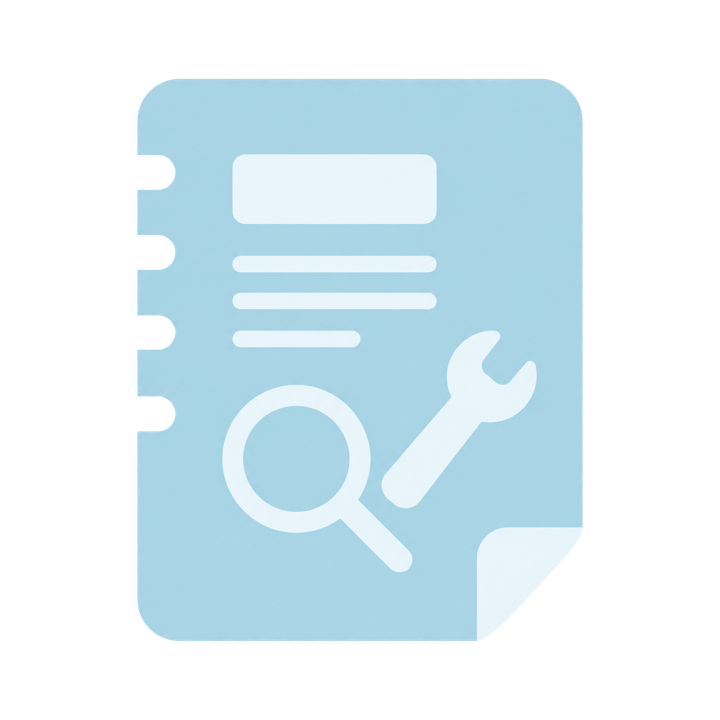

יחידה 1 רקע על תוכנית אתחלתא
המצפן שלנו: מטרות התוכנית
שנות העבודה הראשונות של מחנכות כיתה הן שנים מאתגרות במיוחד. עם צאתן לדרך הן נתקלות בדילמות מקצועיות וחינוכיות, ובהתמודדויות רבות ומגוונות ייחודיות לתפקידן. על מנת לסייע למחנכות החדשות להשתלב ולפעול בכניסה להוראה בכלל ובתפקידן כמחנכות כיתה בפרט, הוקמו סדנאות וחממות אתחלתא – מסגרות למידה המאפשרות ליווי, תמיכה ופיתוח מקצועי מותאם ויעודי למורות המשמשות כבר בראשית דרכן גם כמחנכות כיתה.
מטרות התוכנית
-

הקמה וליווי של חממות וסדנאות
להתמקצעות ותמיכה במחנכות כיתה בתחילת דרכן
-

קידום תפיסה מערכתית ושותפויות
הממוקדות במתן מענים רחבים וסקילבילים למחנכות כיתה בתחילת דרכן
-

פיתוח תכנים וכלים מותאמים
ומבוססי מחקר ולמידה מהשדה לטיוב תהליכי הכניסה לתפקיד של מחנכות כיתה בתחילת דרכן
-

מחנכת כיתה כסוכנת שינוי
קידום תפיסת תפקידה של מחנכת כיתה כסוכנת שינוי בחיי הכיתה והתלמידותיה
מטרת החממות והסדנאות
ליווי, תמיכה ומתן מענה ייעודי, איכותי ורלוונטי לכניסה מיטבית לתפקיד של מחנכות כיתה בתחילת דרכן.
מימוש מטרה זו יתאפשר בהתקיים היסודות הבאים במרחב החממה או הסדנה. עברו לעמוד הבא להכרתם.
- 1 ביטוי עצמי ושייכות
- 2 מקצוענות וניהול עצמי
- 3 זהות
- 4 מסוגלות
- 5 שותפויות
- 6 שליחות ומשמעות